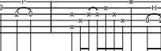
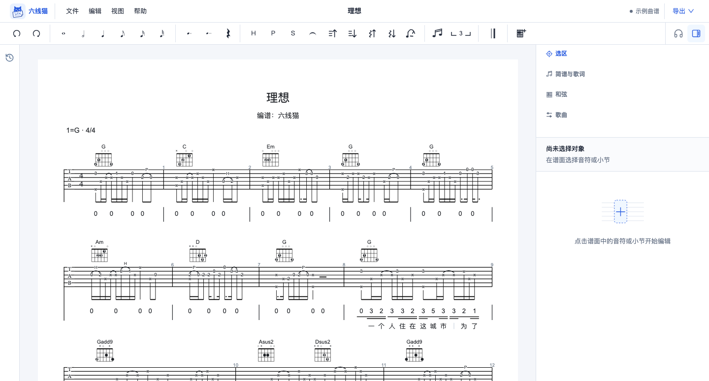
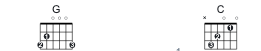
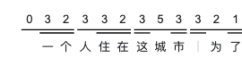
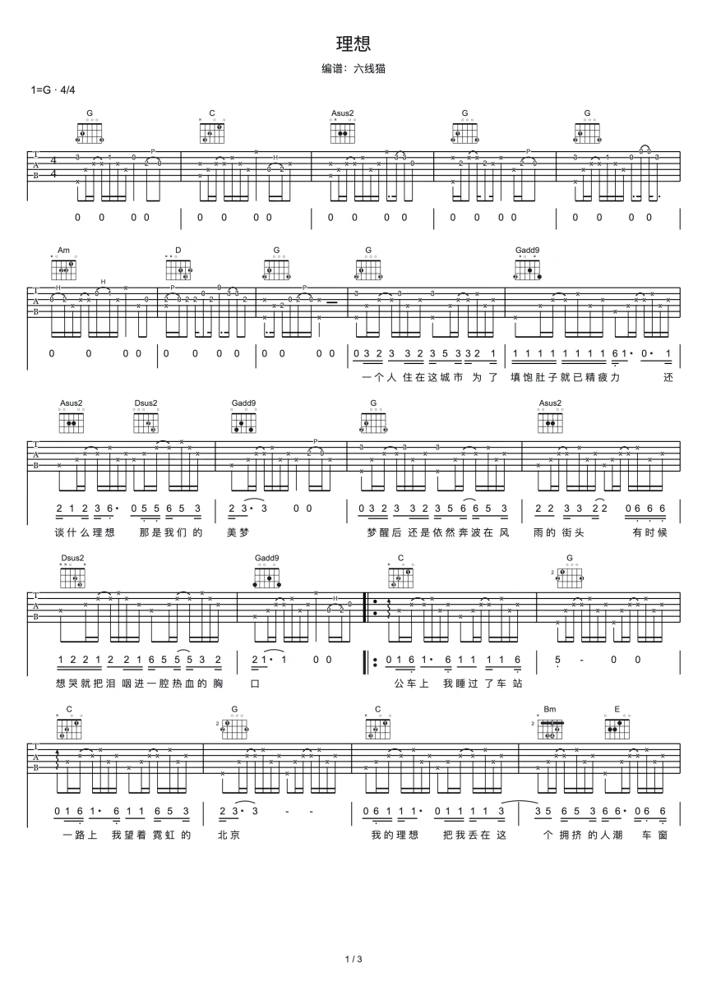

六线猫
六线猫 下载桌面编辑器
下载桌面编辑器
六线谱
在弦格上写下品位与节奏。


在弦格上写下品位与节奏。

把和弦图放在对应的拍点上。

让旋律和唱词随拍点对齐。
新建曲谱，填上曲名，选好调号与拍号。也可以打开已有的 .lxm 文件接着写。
点选弦格输入品位，再设定音符时值。从选中的小节试听，听一听节奏是否合意。
保存 .lxm 原谱以便下次修改。练习或教学时，可把排好的 A4 谱页导出为 PNG，或直接打印。
